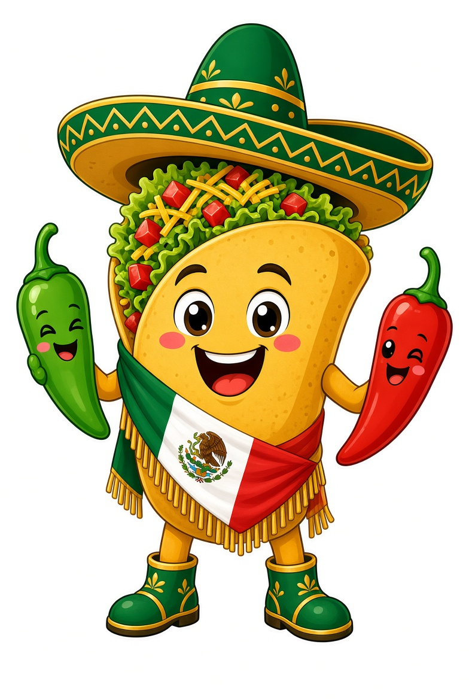
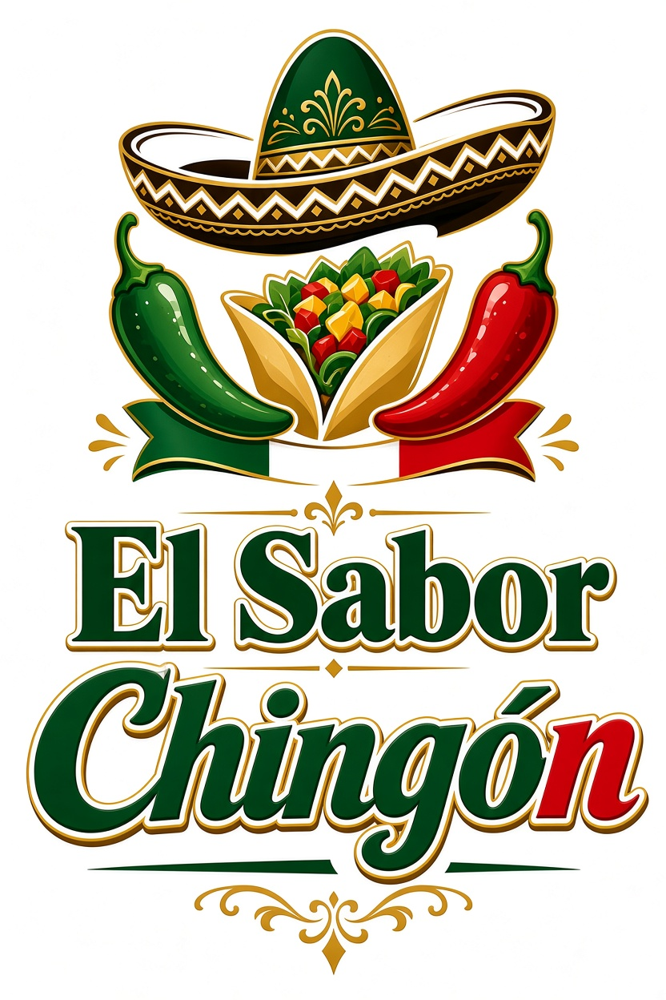

El Sabor Chingón
Ofrecer la auténtica comida mexicana hecha con ingredientes frescos y recetas tradicionales, para que cada cliente sienta el verdadero sabor de México en cada bocado.

Ser el restaurante de comida mexicana más querido de la región, reconocido por nuestro sabor inigualable, ambiente familiar y el orgullo de nuestras raíces.

Todo comenzó en una pequeña cocina familiar. Con recetas de la abuela nació El Sabor Chingón.
Abrimos nuestro primer local. La gente llegó por el aroma de los tacos y el mole.
Expandimos el menú sin perder la esencia de cocinar como en casa.
Seguimos con la misma pasión. Cada platillo lleva el orgullo de ser mexicanos.